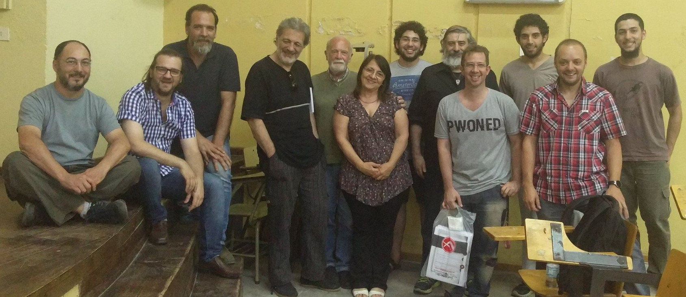

Presentación del Foro por Fede Heinz
Panel de especialistas
Javier Smaldone (informático, especialista en voto electrónico).
Daniel Penazzi (matemático, especialista en criptografía).
Javier Pallero (analista de políticas TIC para América Latina en Access Now)
Rodrigo Iglesias (abogado técnico e investigador de la UBA sobre las implicancias de utilizar Voto Electrónico)
Marcelo Arroyo (docente dpto Computación, UNRC)
Nazareno Aguirre (Dir. dpto Computación, UNRC) Enrique Chaparro (matemático, especialista en Seguridad Informática)
Cobertura periodística en la UNRC
UniRioTV, Pantalla libre
Organiza
Programa de difusión y uso del Software Libre
Secretaría de Extensión y Asistencia Técnica
Facultad de Ciencias Económicas
UNIVERSIDAD NACIONAL DE RÍO CUARTO.
Invitan

Foto grupal
